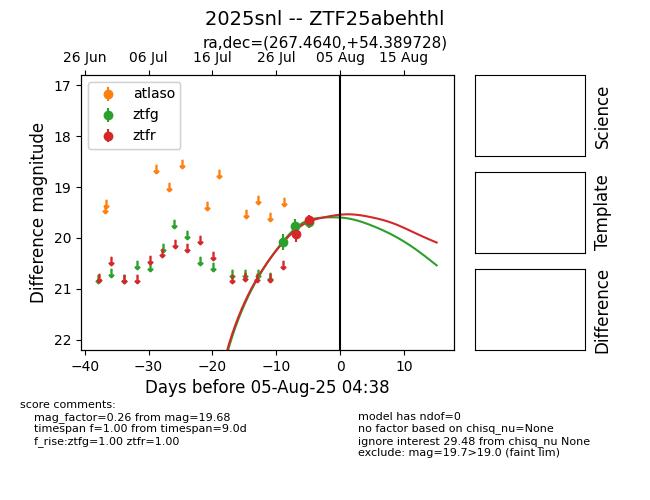

Target 2025snl at 2025-08-05 04:38, see:
FINK: fink-portal.org/2025snl
Lasair: lasair-ztf.lsst.ac.uk/objects/2025snl
ALeRCE: alerce.online/object/2025snl
TNS: wis-tns.org/object/2025snl
YSE: ziggy.ucolick.org/yse/transient_detail/2025snl
alt names
ZTF25abehthl (ztf,fink)
2025snl (tns,yse)
coordinates:
equatorial (ra, dec) = (267.4640,+54.38973)
galactic (l, b) = (82.2498,+30.54986)
photometry
last ztfg=19.68, ztfr=19.65
3 ztfg, 2 ztfr detections
